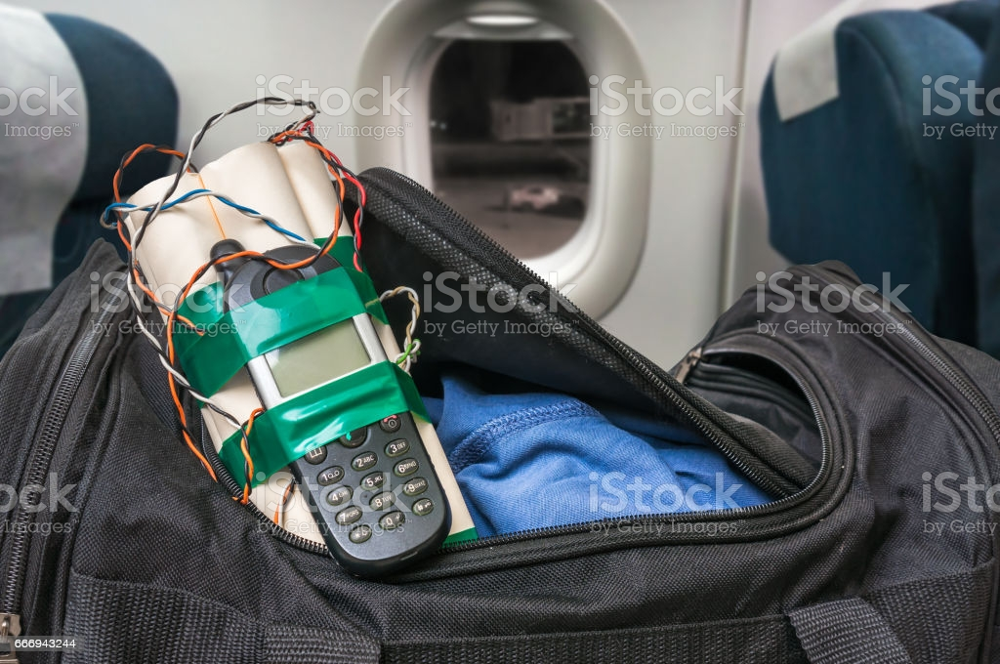
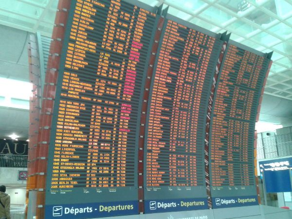
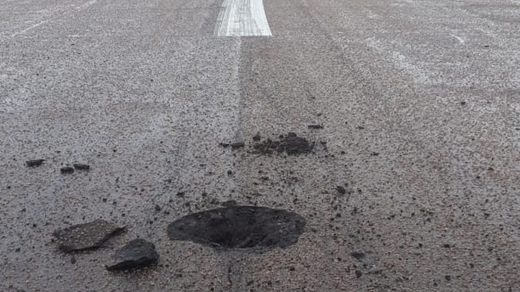
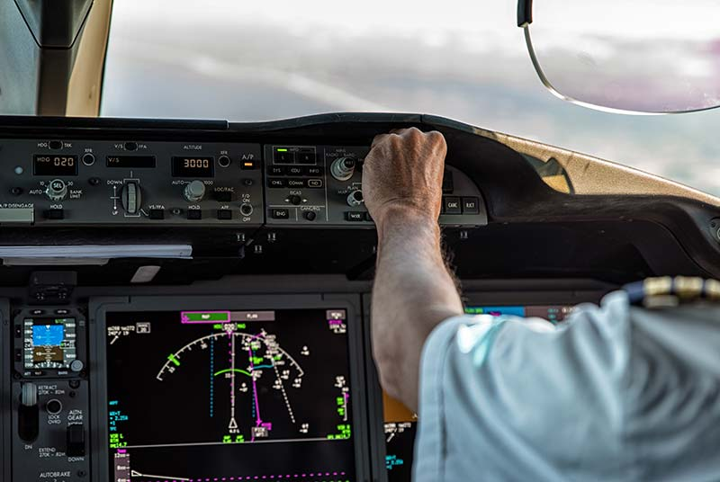
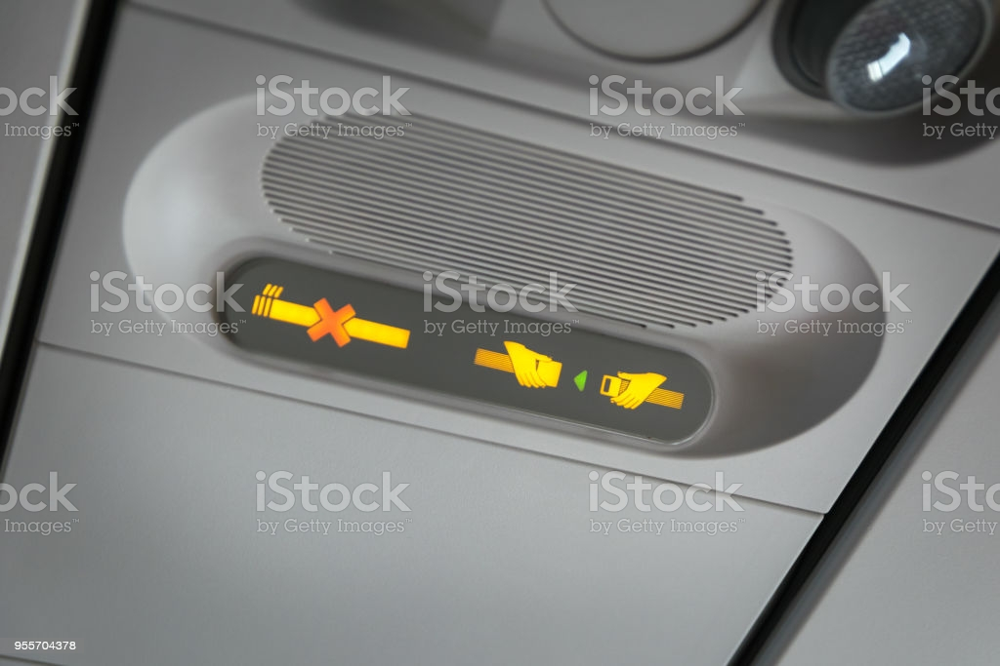

Em um voo de São Paulo para Brasília, um alerta causou pânico não apenas na tripulação,
mas também nos passageiros. Enquanto quase todos dormiam, um passageiro tentava ler.
Sua leitura foi interrompida por um apito que motivou toda a confusão: o passageiro
achou que os apitos lembravam a contagem regressiva de uma bomba.
O passageiro assustado, em vez de chamar os comissários para relatar o que achava que
estava acontecendo, simplesmente gritou: “BOMBA!”. Naturalmente, o alerta gerou um pânico
generalizado dentro da aeronave, que só foi superado após o dono da bolsa da qual vinha o
apito abri-la e mostra que o som era do seu alarme de rotina.

Mesmo com todos os procedimentos de confirmação das informações do voo, pode acontecer de algum
descuido das equipes das companhias aéreas causar confusão. Foi justamente o que a tripulação que
trabalhava em um voo com destino a Salvador testemunhou.
Já com todos os passageiros a bordo, o destino da viagem foi anunciado. Uma senhora então se levantou
extremamente irritada, alertando que a informação estava errada. Para a passageira, aquele voo era para
Guarulhos e não para Salvador. Houve até um início de confusão, com a senhora gritando e exigindo que o
avião pousasse imediatamente.
Os comissários conseguiram acalmar a passageira que, após chegar a Salvador, pegou um avião para Guarulhos, custeado pela companhia.

Dois raios atingiram o aeroporto de Viracopos, em Campinas, causando danos na pista e na taxiway.
As operações foram interrompidas por 57 minutos para que os serviços de reparo emergenciais pudessem ser conduzidos.
Eventos envolvendo raios são bastante comuns em aeroportos, porém, raramente causam danos na pista. Geralmente as descargas
elétricas acontecem nos próprios para-raios ou obstáculos no entorno, como estrutura dos equipamentos de navegação, caixa d’agua, entre outros.
O raio atingiu a pista às 13h43, com as equipes do aeroporto se dirigindo ao local para avaliar eventuais danos, o que foi constatado com buraco de
aproximadamente 80 centímetros de diâmetro. Com o risco para os aviões, a administração de Viracopos suspendeu imediatamente os voos, iniciando o reparo do local.
Foi necessário limpar a área e realizar o preparo do material asfáltico, demandando aproximadamente 40 minutos de serviço.
“A descarga elétrica é bastante intensa, na casa dos milhões de volts. Dependendo de onde atinge é natural causar algum problema como visto em Campinas [aeroporto de Viracopos]”,
explicou o engenheiro de pavimentação Alexandre Morigi. “Não houve falha técnica no pavimento, ao contrário, ele suportou adequadamente a descarga e danificou apenas onde o raio atingiu”.

Uma companhia nacional passava por momentos difíceis em relação à sua situação financeira. Gestores e diretores buscavam controlar a situação e prometiam cobrir todas as pendências
assim que a tudo se normalizasse. O que ninguém esperava é que uma das reivindicações aconteceria nos ares.
O comandante de um voo São Paulo – Rio perdeu a paciência com a companhia e resolveu protestar durante uma de suas viagens: além de atrasar mais de 1 hora para decolar,
ele fez greve de silêncio durante todo o voo, gerando bastante apreensão na tripulação.
No final, tudo terminou bem, mas comissários contam que havia grande tensão e um medo real do comandante tentar alguma loucura, tamanha era sua revolta com as pendências da companhia aérea.

Neste ano, um voo internacional assustou toda a tripulação. Durante a viagem, algumas pessoas sentiram um cheiro que acusava um incêndio nas cabines sanitárias. Os comissários correram e controlaram a
situação, através do uso de extintores. Além do pânico, o que também chamou atenção foi a causa do incêndio.
Após examinarem bem as cabines, os comissários perceberam que o fogo se propagou através de cigarros. Isso mesmo: algum fumante tentou matar o vício no banheiro, mas não apagou bem os cigarros, o que
causou o incidente que poderia ter resultado em tragédia se não pela ação efetiva da tripulação.
